AI VISUALS
FOR BRANDS
Создаю AI-видео, визуальные концепции
и рекламные креативы для бизнеса.
От идеи и референсов — до готового контента,
который работает.
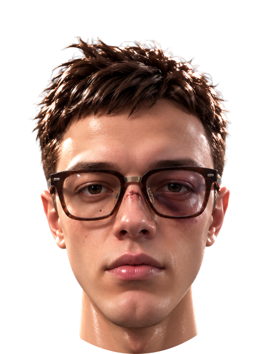
FASHION PRODUCT SOCIAL MEDIA CAMPAIGNS
ABOUT ME
ОБО МНЕ
Я AI-креатор с бэкграундом
в графическом дизайне.
Создаю AI-видео, рекламные креативы, нейрофотосессии и визуальные концепции. Работаю не только с генерацией, но и с композицией, цветом, стилистикой и общей подачей проекта.
FASHION PRODUCT SOCIAL MEDIA ADVERTISING
WORKFLOW
КАК Я РАБОТАЮ
- 01 — БРИФЗадача, продукт,
аудитория и формат. - 02 — РЕФЕРЕНСЫСтилистика, атмосфера
и визуальное направление. - 03 — КОНЦЕПЦИЯИдея, сценарий
и визуальный язык. - 04 — РАСКАДРОВКАКлючевые кадры
и структура ролика. - 05 — ГЕНЕРАЦИЯИзображения, сцены
и анимация. - 06 — ФИНАЛМонтаж, звук, цвет
и подготовка.
Могу подключаться на любой этап или полностью закрывать производство креатива.
FROM IDEA TO BUSINESS
ПОМОГАЮ БРЕНДАМ
РАСТИ С ПОМОЩЬЮ
КРЕАТИВОВ
Мои AI-видео, визуальные концепции и нейрофотосессии помогают бизнесу выделяться, привлекать внимание и экономить ресурсы.
ПРИВЛЕКАЮТ
ВНИМАНИЕ
Яркий, современный визуал, который выделяет бренд.
УСИЛИВАЮТ
ПРОДУКТ
Показываю продукт в новом контексте.
ПОДХОДЯТ
ПОД РАЗНЫЕ КАНАЛЫ
Reels, Shorts, соцсети, сайт, презентации.
ЭКОНОМЯТ
ВРЕМЯ И БЮДЖЕТ
Полноценный контент без традиционной съёмки.
CASE 01 / AI FASHION FILM
SHAPERR
STORE
JEWELLERY / AI VIDEO
- ЗАДАЧА
- Создать атмосферный AI-ролик для ювелирного бренда, где украшение становится главным визуальным акцентом.
- ИДЕЯ
- Соединить fashion-подачу, крупные планы продукта и кинематографичное движение камеры.
- ПРОЦЕСС
- Reference → Keyframes → Generation → Motion → Editing
CASE 02 / AI PRODUCT FILM
TOPOLOGIE
PRODUCT / FASHION
AI VIDEO
Показать продукт через современный lifestyle-контент и сохранить эстетику бренда.
Город, персонаж и продукт объединены в одну визуальную историю.
Nano Banana · Kling · Higgsfield · CapCut
CASE 03 / AI COMMERCIAL
PLUSH FLOWERS
STORYTELLING
AI VIDEO
Короткая визуальная история вокруг необычного продукта — огромного букета плюшевых цветов.
01 Concept · 02 Storyboard · 03 Keyframes
04 Generation · 05 Animation · 06 Editing
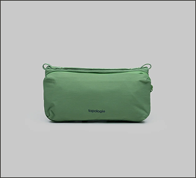
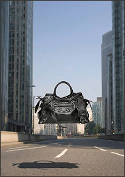
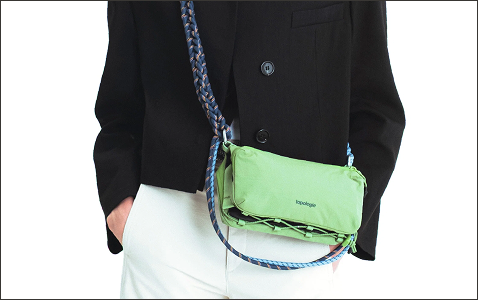
FROM INPUT TO IDEA
С ЧЕГО
МЫ НАЧАЛИ
На старте у нас есть не готовый ролик, а набор исходных материалов и задача.
Это может быть:
• Фото продукта
• Референсы по стилю
• Описание идеи
• Фирменные цвета
Собрать из этих материалов единую визуальную концепцию и определить, как будет выглядеть финальный контент.
FROM IDEA TO FINAL
ИЗ ИСХОДНИКА
В ГОТОВЫЙ КРЕАТИВ
Исходный материал становится частью полноценной визуальной истории.
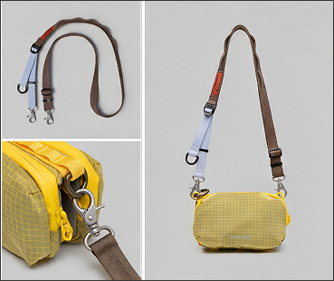
BEFOREИсходный продукт / референс / базовый кадр→
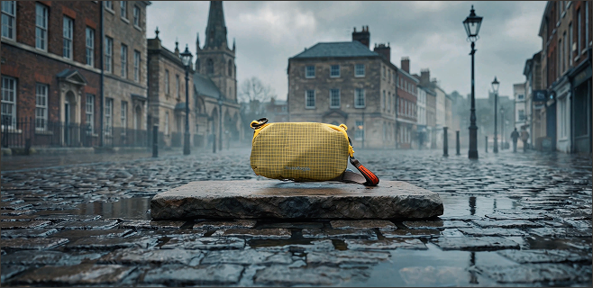
AFTERГотовый рекламный визуал / сцена / кадр из роликаAI PHOTOSHOOT
СЪЁМКА
БЕЗ СЪЁМКИ
Создаю серии изображений с единым персонажем, стилем и визуальным направлением без организации традиционной фотосессии.
КОНТРОЛЬВнешность · Одежда · Свет · Камера · Локация · Композиция · Цвет · Продукт
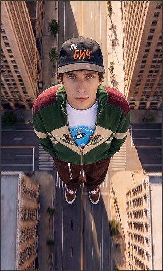
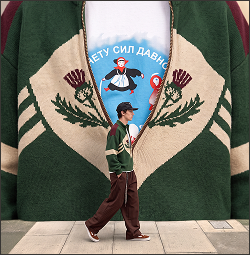
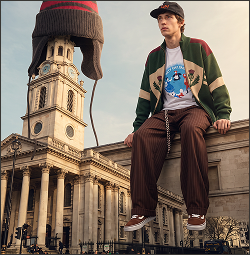
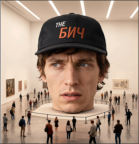
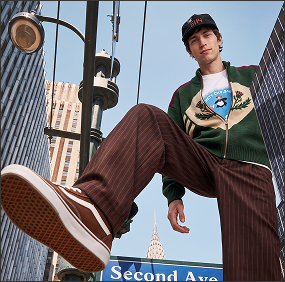
CHARACTER DESIGN / AI
ONE CHARACTER
MANY LOOKS
Создали уникального персонажа и развили его в серию образов.
Зафиксировали узнаваемую внешность и ключевые особенности героя, а затем адаптировали его под разные стили и одежду.
ЧТО СДЕЛАЛИ01 — Создали внешний вид
02 — Зафиксировали особенности
03 — Подобрали образы и одежду
04 — Адаптировали под разные сцены
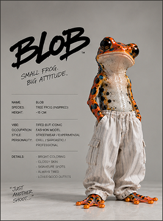
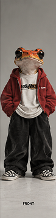
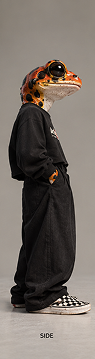
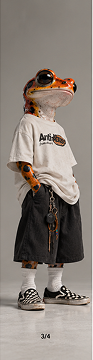
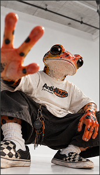
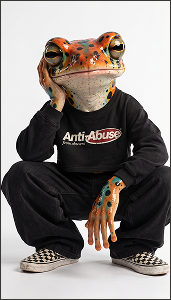
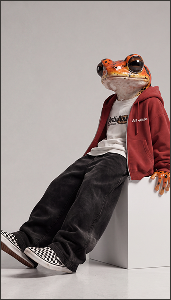
ОДИН ГЕРОЙ — РАЗНЫЕ ОБРАЗЫ
MORE WORK
ДРУГИЕ
РАБОТЫ
Дополнительные проекты, визуальные эксперименты, тесты и AI-работы.
СМОТРЕТЬ ВСЕ РАБОТЫ ↗GOOGLE DRIVE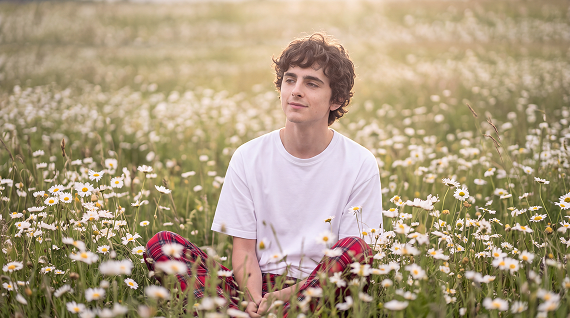
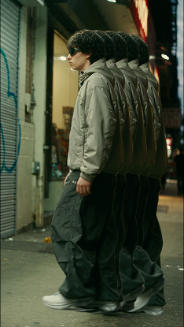
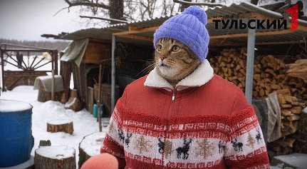